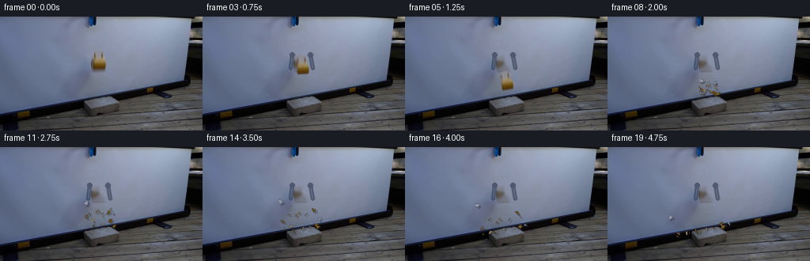
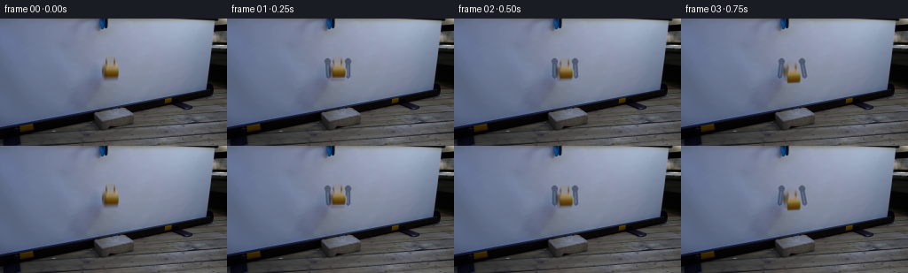

CODING AGENTS AS PIXEL WORLD MODELS
traex/GPT-5.6-Sol · 0124
点击播放 · 原生 RGB 像素
逐轮保存的候选
回放视频、检查图与代码变化。
每份候选均可单独播放。实际图片检查记录在下方工具轨迹中。
候选 01播放与检查图
点击播放 · 原生 RGB 像素


展开代码变化
--- 上一保存版本
+++ 本次保存版本
@@ -0,0 +1,251 @@
+from pathlib import Path
+import math
+import cv2
+import numpy as np
+from PIL import Image
+import artifact_io
+
+CASE_DIR = Path(__file__).resolve().parent
+W, H = 256, 144
+
+
+def alpha_over(dst, src, alpha):
+ """Composite uint8 src over uint8 dst with a float alpha image."""
+ a = np.clip(alpha, 0.0, 1.0)[..., None]
+ return np.clip(dst.astype(np.float32) * (1.0-a) + src.astype(np.float32) * a, 0, 255).astype(np.uint8)
+
+
+def make_mug_assets(first):
+ # Isolate the cup using local graph-cut. Its grey upper lip is intentionally
+ # added to the color-selected yellow body: it is real ceramic reflecting the
+ # cool projection-screen light.
+ bgr = cv2.cvtColor(first, cv2.COLOR_RGB2BGR)
+ gc = np.zeros((H, W), np.uint8)
+ bgd = np.zeros((1, 65), np.float64)
+ fgd = np.zeros((1, 65), np.float64)
+ cv2.grabCut(bgr, gc, (113, 40, 23, 32), bgd, fgd, 8, cv2.GC_INIT_WITH_RECT)
+ mug = ((gc == cv2.GC_FGD) | (gc == cv2.GC_PR_FGD)).astype(np.uint8)
+
+ # The dark/grey elliptical lip does not color-segment with the ochre body.
+ lip = np.zeros_like(mug)
+ cv2.ellipse(lip, (124, 47), (6, 6), 0, 180, 360, 1, -1)
+ cv2.ellipse(lip, (124, 47), (6, 5), 0, 0, 180, 1, -1)
+ # Restrict the augmentation to the observed cup silhouette.
+ lip[:42] = 0
+ lip[53:] = 0
+ mug = np.maximum(mug, lip)
+ mug = cv2.morphologyEx(mug, cv2.MORPH_CLOSE, np.ones((2, 2), np.uint8))
+
+ # Inpaint a clean locked-off plate. A narrow ring avoids copying a yellow
+ # halo while preserving the nearby blue-black grabber.
+ hole = cv2.dilate(mug, np.ones((5, 5), np.uint8), iterations=1)
+ plate_bgr = cv2.inpaint(bgr, hole * 255, 4, cv2.INPAINT_TELEA)
+ plate = cv2.cvtColor(plate_bgr, cv2.COLOR_BGR2RGB)
+
+ # Feather only the outermost source pixel; premultiplication prevents dark
+ # fringes when the cup rotates against the screen.
+ alpha = cv2.GaussianBlur(mug.astype(np.float32), (0, 0), 0.55)
+ alpha = np.clip(alpha, 0, 1)
+ premul = first.astype(np.float32) * alpha[..., None]
+ return plate, alpha, premul, mug
+
+
+def transform_mug(plate, alpha0, premul0, center, angle, cracks=False):
+ origin = (124.5, 55.0)
+ M = cv2.getRotationMatrix2D(origin, angle, 1.0)
+ M[0, 2] += center[0] - origin[0]
+ M[1, 2] += center[1] - origin[1]
+ a = cv2.warpAffine(alpha0, M, (W, H), flags=cv2.INTER_LINEAR,
+ borderMode=cv2.BORDER_CONSTANT, borderValue=0)
+ p = cv2.warpAffine(premul0, M, (W, H), flags=cv2.INTER_LINEAR,
+ borderMode=cv2.BORDER_CONSTANT, borderValue=0)
+ rgb = np.zeros_like(p)
+ valid = a > 1e-4
+ rgb[valid] = p[valid] / a[valid, None]
+ out = alpha_over(plate, np.clip(rgb, 0, 255).astype(np.uint8), a)
+
+ if cracks:
+ # Map a small branching crack from cup coordinates into the image.
+ def tx(pt):
+ return tuple(np.rint(M @ np.array([pt[0], pt[1], 1.0])).astype(int))
+ crack_layer = out.copy()
+ branches = [
+ [(126, 56), (124, 59), (125, 62), (122, 65)],
+ [(124, 59), (121, 60), (119, 63)],
+ [(125, 62), (129, 64), (131, 66)],
+ ]
+ for path in branches:
+ cv2.polylines(crack_layer, [np.array([tx(q) for q in path], np.int32)],
+ False, (54, 47, 33), 1, cv2.LINE_AA)
+ # Crack ink only appears on ceramic.
+ out = alpha_over(out, crack_layer, np.minimum(a * 0.9, 0.9))
+ return out
+
+
+def draw_grabber(frame, openness):
+ """Reveal the two blue-black fingers as they spring away from the cup."""
+ # Very low-contrast metal matches the tool already present in the source.
+ layer = frame.copy()
+ dark = (38, 48, 70)
+ edge = (73, 88, 119)
+ # Pivots sit just outside the cup. At openness=0 the fingers hug it;
+ # positive openness rotates their lower ends outwards.
+ lx = int(round(116 - 5 * openness))
+ rx = int(round(134 + 5 * openness))
+ cv2.line(layer, (113, 48), (lx, 65), dark, 4, cv2.LINE_AA)
+ cv2.line(layer, (136, 48), (rx, 65), dark, 4, cv2.LINE_AA)
+ cv2.line(layer, (113, 48), (lx, 65), edge, 1, cv2.LINE_AA)
+ cv2.line(layer, (136, 48), (rx, 65), edge, 1, cv2.LINE_AA)
+ cv2.circle(layer, (113, 48), 3, dark, -1, cv2.LINE_AA)
+ cv2.circle(layer, (136, 48), 3, dark, -1, cv2.LINE_AA)
+ # Keep this subtle, like the low-contrast blue tool in the photographed frame.
+ return cv2.addWeighted(layer, 0.58, frame, 0.42, 0)
+
+
+def make_fragments(first):
+ rng = np.random.default_rng(124)
+ # Local centers tile the cup rather than materializing unrelated particles.
+ local = [(-6,-9),(-1,-9),(5,-8),(-8,-4),(-3,-4),(2,-4),(7,-3),
+ (-8,1),(-3,1),(2,1),(7,2),(-7,6),(-2,6),(3,6),(7,7),
+ (-10,4),(10,4)]
+ pieces = []
+ for i, (ox, oy) in enumerate(local):
+ sx = int(np.clip(round(124.5 + ox), 118, 132))
+ sy = int(np.clip(round(55 + oy), 48, 64))
+ col = first[sy, sx].astype(np.int16)
+ # Grey lip pieces still retain a warm glaze; body pieces are sampled.
+ if col[0] < 75 or (col.max()-col.min() < 12):
+ col = np.array([126, 99, 49], np.int16) if oy > -7 else np.array([139,137,139], np.int16)
+ col = np.clip(col + rng.integers(-8, 9, 3), 20, 220).astype(np.uint8)
+ radius = float(rng.uniform(2.0, 3.8))
+ n = int(rng.integers(3, 6))
+ angles = np.sort(rng.uniform(0, 2*math.pi, n))
+ verts = np.c_[np.cos(angles)*rng.uniform(.55, 1.1, n)*radius,
+ np.sin(angles)*rng.uniform(.55, 1.05, n)*radius]
+ # Outward impulse plus a strong upward component from brittle impact.
+ vx = ox * 0.28 + rng.uniform(-2.0, 2.0)
+ vy = rng.uniform(-6.4, -1.2) - max(0, oy) * .10
+ pieces.append(dict(x=128.0+ox, y=94.5+oy, vx=vx, vy=vy,
+ angle=float(rng.uniform(-math.pi, math.pi)),
+ spin=float(rng.uniform(-.7, .7)), verts=verts,
+ color=tuple(map(int, col)), resting=False))
+ return pieces
+
+
+def advance_fragments(pieces):
+ # Four substeps make contacts with the diagonal brick top stable.
+ dt = 0.25
+ for p in pieces:
+ if p['resting']:
+ continue
+ for _ in range(4):
+ p['vy'] += 1.05 * dt
+ p['x'] += p['vx'] * dt
+ p['y'] += p['vy'] * dt
+ p['angle'] += p['spin'] * dt
+ rad = 2.0
+ surface = 131.0 - 0.195 * p['x']
+ if p['y'] + rad > surface:
+ p['y'] = surface - rad
+ # Reflect about the upward normal of y + .195x - 131 = 0.
+ nx, ny = -0.1914, -0.9815
+ dot = p['vx']*nx + p['vy']*ny
+ if dot < 0:
+ p['vx'] -= 1.38 * dot * nx
+ p['vy'] -= 1.38 * dot * ny
+ p['vx'] *= .72
+ p['spin'] *= .63
+ if abs(p['vy']) < 1.1 and abs(p['vx']) < .75:
+ p['vy'] = 0.0
+ p['vx'] = 0.0
+ p['spin'] = 0.0
+ p['resting'] = True
+ if p['x'] < -8 or p['x'] > W+8:
+ p['resting'] = True
+
+
+def draw_fragments(frame, pieces, dust_strength=0.0):
+ scale = 3
+ sh = np.zeros((H*scale, W*scale, 3), np.uint8)
+ sa = np.zeros((H*scale, W*scale), np.uint8)
+ fg = np.zeros_like(sh)
+ fa = np.zeros_like(sa)
+
+ # Soft, brief powder at the exact point of ceramic/concrete contact.
+ if dust_strength > 0:
+ for j in range(9):
+ ang = 2*math.pi*j/9.0
+ x = int((129 + math.cos(ang)*(3+8*dust_strength))*scale)
+ y = int((105 + math.sin(ang)*3*dust_strength)*scale)
+ cv2.circle(fg, (x, y), max(1, int(1.5*scale*dust_strength)),
+ (151, 143, 123), -1, cv2.LINE_AA)
+ cv2.circle(fa, (x, y), max(1, int(1.5*scale*dust_strength)),
+ int(90*dust_strength), -1, cv2.LINE_AA)
+
+ for p in pieces:
+ c, s = math.cos(p['angle']), math.sin(p['angle'])
+ R = np.array([[c, -s], [s, c]])
+ pts = p['verts'] @ R.T + np.array([p['x'], p['y']])
+ ip = np.rint(pts*scale).astype(np.int32)
+ # A tiny contact shadow anchors fragments to the sloping concrete.
+ shadow = ip + np.array([2*scale, 2*scale], np.int32)
+ cv2.fillConvexPoly(sh, shadow, (30, 29, 28), cv2.LINE_AA)
+ cv2.fillConvexPoly(sa, shadow, 72, cv2.LINE_AA)
+ cv2.fillConvexPoly(fg, ip, p['color'], cv2.LINE_AA)
+ cv2.fillConvexPoly(fa, ip, 255, cv2.LINE_AA)
+ # Highlight one edge of glazed ceramic.
+ if len(ip) >= 2:
+ hi = tuple(min(255, v+28) for v in p['color'])
+ cv2.line(fg, tuple(ip[0]), tuple(ip[1]), hi, max(1, scale//2), cv2.LINE_AA)
+
+ sh = cv2.resize(sh, (W, H), interpolation=cv2.INTER_AREA)
+ sa = cv2.resize(sa, (W, H), interpolation=cv2.INTER_AREA).astype(np.float32)/255
+ fg = cv2.resize(fg, (W, H), interpolation=cv2.INTER_AREA)
+ fa = cv2.resize(fa, (W, H), interpolation=cv2.INTER_AREA).astype(np.float32)/255
+ out = alpha_over(frame, sh, sa)
+ return alpha_over(out, fg, fa)
+
+
+def generate():
+ first = np.array(Image.open(CASE_DIR / 'first_frame.png').convert('RGB'), dtype=np.uint8)
+ assert first.shape == (H, W, 3)
+ plate, alpha0, premul0, _ = make_mug_assets(first)
+ frames = [first.copy()]
+
+ # The first two beats show the jaws opening before gravity becomes obvious.
+ centers = {
+ 1: (124.5, 55.0),
+ 2: (124.7, 56.5),
+ 3: (125.2, 61.0),
+ 4: (126.0, 69.5),
+ 5: (127.0, 81.0),
+ 6: (128.0, 92.5),
+ }
+ angles = {1: 0.0, 2: 0.8, 3: 2.4, 4: 5.0, 5: 8.5, 6: 12.0}
+
+ for i in range(1, 7):
+ # The tool is behind the falling object. At frame one the near-closed
+ # jaws are mostly occluded; afterwards their opening is clearly legible.
+ open_amt = min(1.0, i/3.0)
+ bg = draw_grabber(plate.copy(), open_amt)
+ frames.append(transform_mug(bg, alpha0, premul0, centers[i], angles[i], cracks=(i == 6)))
+
+ pieces = make_fragments(first)
+ # Frame 7 is the instant of failure: fragments retain the original cup form.
+ impact_bg = draw_grabber(plate.copy(), 1.0)
+ frames.append(draw_fragments(impact_bg, pieces, dust_strength=0.85))
+ for i in range(8, 20):
+ advance_fragments(pieces)
+ dust = max(0.0, 0.65 - 0.20*(i-8))
+ bg = draw_grabber(plate.copy(), 1.0)
+ frames.append(draw_fragments(bg, pieces, dust_strength=dust))
+
+ arr = np.stack(frames).astype(np.uint8)
+ # Contract-critical identity check.
+ assert np.array_equal(arr[0], first)
+ assert arr.shape == (20, H, W, 3)
+ artifact_io.save(arr, CASE_DIR)
+
+
+if __name__ == '__main__':
+ generate()
候选 02播放与检查图
点击播放 · 原生 RGB 像素

展开代码变化
--- 上一保存版本
+++ 本次保存版本
@@ -139,7 +139,7 @@
if p['resting']:
continue
for _ in range(4):
- p['vy'] += 1.05 * dt
+ p['vy'] += 2.35 * dt
p['x'] += p['vx'] * dt
p['y'] += p['vy'] * dt
p['angle'] += p['spin'] * dt
候选 03播放与检查图
可观测工具轨迹
实际执行的命令与返回图片。
命令 1exit 0
/bin/bash -lc "cat prompt.txt && printf '\\n---RULES---\\n' && cat GENERATION_RULES.md"
命令 2exit 0
/bin/bash -lc "find . -maxdepth 2 -type f -printf '%p %s bytes\\n' | sort && python3 - <<'PY'
from PIL import Image
im=Image.open('first_frame.png')
print(im.mode, im.size)
PY"命令 3exit 0
/bin/bash -lc "python3 - <<'PY'
from PIL import Image
import numpy as np
from sklearn.cluster import KMeans
im=np.array(Image.open('first_frame.png'))
a=im.reshape(-1,3)
km=KMeans(16,random_state=1,n_init=10).fit(a[::2])
lab=km.predict(a).reshape(im.shape[:2]); cen=np.rint(km.cluster_centers_).astype(int)
# sort ids by luminance, symbols
order=np.argsort(cen.mean(1)); chars=' .,:;irsXA253hMHGS#9B&@'
syms={k:chars[i] for i,k in enumerate(order)}
print([(syms[k],cen[k].tolist(),int((lab==k).sum())) for k in order])
# print 2x2 majority block
for y in range(0,144,3):
s=''
for x in range(0,256,3):
q=lab[y:y+3,x:x+3].ravel(); k=np.bincount(q,minlength=16).argmax(); s+=syms[k]
print(s)
PY"命令 4exit 0
/bin/bash -lc "python3 - <<'PY'
from PIL import Image
import numpy as np, cv2
im=np.array(Image.open('first_frame.png'))
hsv=cv2.cvtColor(im,cv2.COLOR_RGB2HSV)
for name,lo,hi in [('yellow',(10,60,45),(45,255,255)),('blue',(90,30,20),(130,255,220)),('dark',(0,0,0),(179,255,55)),('white',(0,0,180),(179,50,255))]:
m=cv2.inRange(hsv,np.array(lo),np.array(hi))>0
n,lab,stats,cents=cv2.connectedComponentsWithStats(m.astype('uint8'),8)
print('\\n',name,'pixels',m.sum())
for i in np.argsort(stats[1:,4])[-10:][::-1]+1:
x,y,w,h,a=stats[i]; print((x,y,w,h,a), np.round(cents[i],1))
# coarse mask grids every 4 px with dominant annotated classifications
H=hsv[:,:,0];S=hsv[:,:,1];V=hsv[:,:,2]
yellow=(H>=10)&(H<=45)&(S>60)&(V>45)
blue=(H>=90)&(H<=130)&(S>35)&(V<220)
dark=V<55
for y0,y1,x0,x1 in [(0,90,80,190),(60,144,50,220),(0,144,0,256)]:
print('\\nCROP',x0,x1,y0,y1)
st=2 if x1-x0<150 else 4
for y in range(y0,y1,st):
s=''
for x in range(x0,x1,st):
sl=np.s_[y:y+st,x:x+st]
vals=[yellow[sl].mean(),blue[sl].mean(),dark[sl].mean()]
j=np.argmax(vals)
s+= 'YBD'[j] if vals[j]>.25 else ' '
print(s.rstrip())
PY"命令 5exit 0
/bin/bash -lc "python3 - <<'PY'
import cv2, numpy as np
im=cv2.imread('first_frame.png'); g=cv2.cvtColor(im,cv2.COLOR_BGR2GRAY)
e=cv2.Canny(g,40,100)
# dilate modestly then block occupancy
for scale in [2,3]:
print('\\nSCALE',scale)
for y in range(0,144,scale):
s=''
for x in range(0,256,scale):
q=e[y:y+scale,x:x+scale].mean()/255
s += '#' if q>.5 else '+' if q>.2 else '.' if q>0 else ' '
print(s.rstrip())
# contours hierarchy bounding
cs,_=cv2.findContours(e,cv2.RETR_LIST,cv2.CHAIN_APPROX_SIMPLE)
print('contours')
for c in sorted(cs,key=cv2.contourArea,reverse=True)[:40]:
print(round(cv2.contourArea(c),1),cv2.boundingRect(c))
PY"命令 6exit 0
/bin/bash -lc "python3 - <<'PY'
from PIL import Image
import numpy as np, cv2
im=np.array(Image.open('first_frame.png')); hsv=cv2.cvtColor(im,cv2.COLOR_RGB2HSV)
# luminance fixed levels and yellow char
for y in range(0,90):
s=f'{y:02} '
for x in range(85,155):
r,g,b=map(int,im[y,x]); h,st,v=map(int,hsv[y,x])
if 9<=h<=45 and st>50: c='Y' if v>120 else 'y'
elif st>65 and b>r*1.15: c='B' if v>110 else 'b'
else:
c='@#8&"'$%*o!;:,. '"'[min(12,v//20)]
s+=c
print(s.rstrip())
PY"命令 7exit 0
/bin/bash -lc "python3 - <<'PY'
from PIL import Image
import numpy as np, cv2
im=np.array(Image.open('first_frame.png')); hsv=cv2.cvtColor(im,cv2.COLOR_RGB2HSV)
# exact char 105:143
for y in range(38,76):
s=f'{y:02} '
for x in range(105,145):
h,st,v=map(int,hsv[y,x]); r,g,b=map(int,im[y,x]);
if (8<=h<=50 and st>45): c='Y' if v>155 else 'y' if v>95 else 'q'
elif (90<=h<=135 and st>35): c='B' if v>130 else 'b' if v>70 else 'd'
elif v<45:c='#'
elif v<75:c='&'
elif v<105:c='o'
elif v<140:c='.'
elif v<180:c=','
else:c=' '
s+=c
print(s)
# rgb rows relevant run-length
for y in [45,46,47,48,50,52,54,56,58,60,62,64,66,68,70]:
print('\\ny=',y)
for x in range(112,137):
print(x,tuple(im[y,x]),tuple(hsv[y,x]),end='; ')
print()
PY"命令 8exit 0
/bin/bash -lc "python3 - <<'PY'
import cv2, numpy as np
im=cv2.imread('first_frame.png')
for rect in [(113,40,23,32),(114,41,21,30),(116,41,19,30)]:
mask=np.zeros(im.shape[:2],np.uint8); bg=np.zeros((1,65)); fg=np.zeros((1,65)); cv2.grabCut(im,mask,rect,bg,fg,8,cv2.GC_INIT_WITH_RECT)
m=(mask&1).astype(np.uint8)
print('\\n',rect,m.sum())
for y in range(38,74):
print(f'{y:02}', ''.join('#' if m[y,x] else ' ' for x in range(108,141)))
PY"命令 9exit 0
/bin/bash -lc "python3 - <<'PY'
import cv2, numpy as np
im=cv2.imread('first_frame.png'); e=cv2.Canny(cv2.cvtColor(im,cv2.COLOR_BGR2GRAY),25,70)
for y in range(70,131): print(f'{y:03} '+''.join('#' if e[y,x] else ' ' for x in range(40,230)))
PY"命令 10exit 0
/bin/bash -lc "python3 - <<'PY'
import cv2,numpy as np
im=cv2.imread('first_frame.png'); blur=cv2.GaussianBlur(im,(0,0),4); d=np.sqrt(((im.astype(float)-blur)**2).sum(2))
for y in range(0,85):
print(f'{y:02} '+''.join('#' if d[y,x]>35 else '+' if d[y,x]>18 else ' ' for x in range(80,170)))
PY"命令 11exit 0
/bin/bash -lc 'cat artifact_io.py'
命令 12exit 0
/bin/bash -lc "cat > generate.py <<'PY'
from pathlib import Path
import math
import cv2
import numpy as np
from PIL import Image
import artifact_io
CASE_DIR = Path(__file__).resolve().parent
W, H = 256, 144
def alpha_over(dst, src, alpha):
\"\"\"Composite uint8 src over uint8 dst with a float alpha image.\"\"\"
a = np.clip(alpha, 0.0, 1.0)[..., None]
return np.clip(dst.astype(np.float32) * (1.0-a) + src.astype(np.float32) * a, 0, 255).astype(np.uint8)
def make_mug_assets(first):
# Isolate the cup using local graph-cut. Its grey upper lip is intentionally
# added to the color-selected yellow body: it is real ceramic reflecting the
# cool projection-screen light.
bgr = cv2.cvtColor(first, cv2.COLOR_RGB2BGR)
gc = np.zeros((H, W), np.uint8)
bgd = np.zeros((1, 65), np.float64)
fgd = np.zeros((1, 65), np.float64)
cv2.grabCut(bgr, gc, (113, 40, 23, 32), bgd, fgd, 8, cv2.GC_INIT_WITH_RECT)
mug = ((gc == cv2.GC_FGD) | (gc == cv2.GC_PR_FGD)).astype(np.uint8)
# The dark/grey elliptical lip does not color-segment with the ochre body.
lip = np.zeros_like(mug)
cv2.ellipse(lip, (124, 47), (6, 6), 0, 180, 360, 1, -1)
cv2.ellipse(lip, (124, 47), (6, 5), 0, 0, 180, 1, -1)
# Restrict the augmentation to the observed cup silhouette.
lip[:42] = 0
lip[53:] = 0
mug = np.maximum(mug, lip)
mug = cv2.morphologyEx(mug, cv2.MORPH_CLOSE, np.ones((2, 2), np.uint8))
# Inpaint a clean locked-off plate. A narrow ring avoids copying a yellow
# halo while preserving the nearby blue-black grabber.
hole = cv2.dilate(mug, np.ones((5, 5), np.uint8), iterations=1)
plate_bgr = cv2.inpaint(bgr, hole * 255, 4, cv2.INPAINT_TELEA)
plate = cv2.cvtColor(plate_bgr, cv2.COLOR_BGR2RGB)
# Feather only the outermost source pixel; premultiplication prevents dark
# fringes when the cup rotates against the screen.
alpha = cv2.GaussianBlur(mug.astype(np.float32), (0, 0), 0.55)
alpha = np.clip(alpha, 0, 1)
premul = first.astype(np.float32) * alpha[..., None]
return plate, alpha, premul, mug
def transform_mug(plate, alpha0, premul0, center, angle, cracks=False):
origin = (124.5, 55.0)
M = cv2.getRotationMatrix2D(origin, angle, 1.0)
M[0, 2] += center[0] - origin[0]
M[1, 2] += center[1] - origin[1]
a = cv2.warpAffine(alpha0, M, (W, H), flags=cv2.INTER_LINEAR,
borderMode=cv2.BORDER_CONSTANT, borderValue=0)
p = cv2.warpAffine(premul0, M, (W, H), flags=cv2.INTER_LINEAR,
borderMode=cv2.BORDER_CONSTANT, borderValue=0)
rgb = np.zeros_like(p)
valid = a > 1e-4
rgb[valid] = p[valid] / a[valid, None]
out = alpha_over(plate, np.clip(rgb, 0, 255).astype(np.uint8), a)
if cracks:
# Map a small branching crack from cup coordinates into the image.
def tx(pt):
return tuple(np.rint(M @ np.array([pt[0], pt[1], 1.0])).astype(int))
crack_layer = out.copy()
branches = [
[(126, 56), (124, 59), (125, 62), (122, 65)],
[(124, 59), (121, 60), (119, 63)],
[(125, 62), (129, 64), (131, 66)],
]
for path in branches:
cv2.polylines(crack_layer, [np.array([tx(q) for q in path], np.int32)],
False, (54, 47, 33), 1, cv2.LINE_AA)
# Crack ink only appears on ceramic.
out = alpha_over(out, crack_layer, np.minimum(a * 0.9, 0.9))
return out
def draw_grabber(frame, openness):
\"\"\"Reveal the two blue-black fingers as they spring away from the cup.\"\"\"
# Very low-contrast metal matches the tool already present in the source.
layer = frame.copy()
dark = (38, 48, 70)
edge = (73, 88, 119)
# Pivots sit just outside the cup. At openness=0 the fingers hug it;
# positive openness rotates their lower ends outwards.
lx = int(round(116 - 5 * openness))
rx = int(round(134 + 5 * openness))
cv2.line(layer, (113, 48), (lx, 65), dark, 4, cv2.LINE_AA)
cv2.line(layer, (136, 48), (rx, 65), dark, 4, cv2.LINE_AA)
cv2.line(layer, (113, 48), (lx, 65), edge, 1, cv2.LINE_AA)
cv2.line(layer, (136, 48), (rx, 65), edge, 1, cv2.LINE_AA)
cv2.circle(layer, (113, 48), 3, dark, -1, cv2.LINE_AA)
cv2.circle(layer, (136, 48), 3, dark, -1, cv2.LINE_AA)
# Keep this subtle, like the low-contrast blue tool in the photographed frame.
return cv2.addWeighted(layer, 0.58, frame, 0.42, 0)
def make_fragments(first):
rng = np.random.default_rng(124)
# Local centers tile the cup rather than materializing unrelated particles.
local = [(-6,-9),(-1,-9),(5,-8),(-8,-4),(-3,-4),(2,-4),(7,-3),
(-8,1),(-3,1),(2,1),(7,2),(-7,6),(-2,6),(3,6),(7,7),
(-10,4),(10,4)]
pieces = []
for i, (ox, oy) in enumerate(local):
sx = int(np.clip(round(124.5 + ox), 118, 132))
sy = int(np.clip(round(55 + oy), 48, 64))
col = first[sy, sx].astype(np.int16)
# Grey lip pieces still retain a warm glaze; body pieces are sampled.
if col[0] < 75 or (col.max()-col.min() < 12):
col = np.array([126, 99, 49], np.int16) if oy > -7 else np.array([139,137,139], np.int16)
col = np.clip(col + rng.integers(-8, 9, 3), 20, 220).astype(np.uint8)
radius = float(rng.uniform(2.0, 3.8))
n = int(rng.integers(3, 6))
angles = np.sort(rng.uniform(0, 2*math.pi, n))
verts = np.c_[np.cos(angles)*rng.uniform(.55, 1.1, n)*radius,
np.sin(angles)*rng.uniform(.55, 1.05, n)*radius]
# Outward impulse plus a strong upward component from brittle impact.
vx = ox * 0.28 + rng.uniform(-2.0, 2.0)
vy = rng.uniform(-6.4, -1.2) - max(0, oy) * .10
pieces.append(dict(x=128.0+ox, y=94.5+oy, vx=vx, vy=vy,
angle=float(rng.uniform(-math.pi, math.pi)),
spin=float(rng.uniform(-.7, .7)), verts=verts,
color=tuple(map(int, col)), resting=False))
return pieces
def advance_fragments(pieces):
# Four substeps make contacts with the diagonal brick top stable.
dt = 0.25
for p in pieces:
if p['resting']:
continue
for _ in range(4):
p['vy'] += 1.05 * dt
p['x'] += p['vx'] * dt
p['y'] += p['vy'] * dt
p['angle'] += p['spin'] * dt
rad = 2.0
surface = 131.0 - 0.195 * p['x']
if p['y'] + rad > surface:
p['y'] = surface - rad
# Reflect about the upward normal of y + .195x - 131 = 0.
nx, ny = -0.1914, -0.9815
dot = p['vx']*nx + p['vy']*ny
if dot < 0:
p['vx'] -= 1.38 * dot * nx
p['vy'] -= 1.38 * dot * ny
p['vx'] *= .72
p['spin'] *= .63
if abs(p['vy']) < 1.1 and abs(p['vx']) < .75:
p['vy'] = 0.0
p['vx'] = 0.0
p['spin'] = 0.0
p['resting'] = True
if p['x'] < -8 or p['x'] > W+8:
p['resting'] = True
def draw_fragments(frame, pieces, dust_strength=0.0):
scale = 3
sh = np.zeros((H*scale, W*scale, 3), np.uint8)
sa = np.zeros((H*scale, W*scale), np.uint8)
fg = np.zeros_like(sh)
fa = np.zeros_like(sa)
# Soft, brief powder at the exact point of ceramic/concrete contact.
if dust_strength > 0:
for j in range(9):
ang = 2*math.pi*j/9.0
x = int((129 + math.cos(ang)*(3+8*dust_strength))*scale)
y = int((105 + math.sin(ang)*3*dust_strength)*scale)
cv2.circle(fg, (x, y), max(1, int(1.5*scale*dust_strength)),
(151, 143, 123), -1, cv2.LINE_AA)
cv2.circle(fa, (x, y), max(1, int(1.5*scale*dust_strength)),
int(90*dust_strength), -1, cv2.LINE_AA)
for p in pieces:
c, s = math.cos(p['angle']), math.sin(p['angle'])
R = np.array([[c, -s], [s, c]])
pts = p['verts'] @ R.T + np.array([p['x'], p['y']])
ip = np.rint(pts*scale).astype(np.int32)
# A tiny contact shadow anchors fragments to the sloping concrete.
shadow = ip + np.array([2*scale, 2*scale], np.int32)
cv2.fillConvexPoly(sh, shadow, (30, 29, 28), cv2.LINE_AA)
cv2.fillConvexPoly(sa, shadow, 72, cv2.LINE_AA)
cv2.fillConvexPoly(fg, ip, p['color'], cv2.LINE_AA)
cv2.fillConvexPoly(fa, ip, 255, cv2.LINE_AA)
# Highlight one edge of glazed ceramic.
if len(ip) >= 2:
hi = tuple(min(255, v+28) for v in p['color'])
cv2.line(fg, tuple(ip[0]), tuple(ip[1]), hi, max(1, scale//2), cv2.LINE_AA)
sh = cv2.resize(sh, (W, H), interpolation=cv2.INTER_AREA)
sa = cv2.resize(sa, (W, H), interpolation=cv2.INTER_AREA).astype(np.float32)/255
fg = cv2.resize(fg, (W, H), interpolation=cv2.INTER_AREA)
fa = cv2.resize(fa, (W, H), interpolation=cv2.INTER_AREA).astype(np.float32)/255
out = alpha_over(frame, sh, sa)
return alpha_over(out, fg, fa)
def generate():
first = np.array(Image.open(CASE_DIR / 'first_frame.png').convert('RGB'), dtype=np.uint8)
assert first.shape == (H, W, 3)
plate, alpha0, premul0, _ = make_mug_assets(first)
frames = [first.copy()]
# The first two beats show the jaws opening before gravity becomes obvious.
centers = {
1: (124.5, 55.0),
2: (124.7, 56.5),
3: (125.2, 61.0),
4: (126.0, 69.5),
5: (127.0, 81.0),
6: (128.0, 92.5),
}
angles = {1: 0.0, 2: 0.8, 3: 2.4, 4: 5.0, 5: 8.5, 6: 12.0}
for i in range(1, 7):
# The tool is behind the falling object. At frame one the near-closed
# jaws are mostly occluded; afterwards their opening is clearly legible.
open_amt = min(1.0, i/3.0)
bg = draw_grabber(plate.copy(), open_amt)
frames.append(transform_mug(bg, alpha0, premul0, centers[i], angles[i], cracks=(i == 6)))
pieces = make_fragments(first)
# Frame 7 is the instant of failure: fragments retain the original cup form.
impact_bg = draw_grabber(plate.copy(), 1.0)
frames.append(draw_fragments(impact_bg, pieces, dust_strength=0.85))
for i in range(8, 20):
advance_fragments(pieces)
dust = max(0.0, 0.65 - 0.20*(i-8))
bg = draw_grabber(plate.copy(), 1.0)
frames.append(draw_fragments(bg, pieces, dust_strength=dust))
arr = np.stack(frames).astype(np.uint8)
# Contract-critical identity check.
assert np.array_equal(arr[0], first)
assert arr.shape == (20, H, W, 3)
artifact_io.save(arr, CASE_DIR)
if __name__ == '__main__':
generate()
PY
python3 generate.py
python3 - <<'PY'
from PIL import Image
import numpy as np, hashlib
f=np.array(Image.open('first_frame.png'))
g=np.array(Image.open('frames/00.png'))
print('exact',np.array_equal(f,g),hashlib.sha256(f.tobytes()).hexdigest()[:16])
a=np.stack([np.array(Image.open(f'frames/{i:02}.png')) for i in range(20)])
print(a.shape,a.dtype,'changed pixels:',[(i,int(np.any(a[i]"'!=a[0],2).sum())) for i in range(20)])
PY'命令 13exit 0
/bin/bash -lc "python3 - <<'PY'
from PIL import Image
import numpy as np, cv2
base=np.array(Image.open('first_frame.png'))
for fi in range(20):
a=np.array(Image.open(f'frames/{fi:02}.png'))
d=np.max(abs(a.astype(int)-base.astype(int)),2)
print('\\nFRAME',fi)
# crop x100:150 y38:125, 2x2. show changed and yellow/dark
hsv=cv2.cvtColor(a,cv2.COLOR_RGB2HSV)
for y in range(38,126,4):
s=''
for x in range(98,154,2):
dd=d[y:y+4,x:x+2]
hh=hsv[y:y+4,x:x+2]
yy=((hh[:,:,0]>=8)&(hh[:,:,0]<45)&(hh[:,:,1]>55)).mean()
if yy>.25:c='Y'
elif dd.mean()>30:c='#'
elif (dd>8).mean()>.25:c='+'
else:c=' '
s+=c
print(s.rstrip())
PY"命令 14exit 0
/bin/bash -lc "python3 - <<'PY'
p='generate.py'
s=open(p).read().replace(\"p['vy'] += 1.05 * dt\", \"p['vy'] += 2.35 * dt\")
open(p,'w').write(s)
PY
python3 generate.py
python3 - <<'PY'
import numpy as np
from PIL import Image
# Summarize new-object colored pixels' y-ranges outside persistent tool for physical sanity.
base=np.array(Image.open('first_frame.png')).astype(int)
for i in range(5,20):
a=np.array(Image.open(f'frames/{i:02}.png')).astype(int)
d=np.max(abs(a-base),2)>25
yy,xx=np.where(d & (np.indices(d.shape)[0]>70))
print(i, (int(xx.min()),int(yy.min()),int(xx.max()),int(yy.max()),len(xx)) if len(xx) else None)
PY"命令 15exit 0
/bin/bash -lc "python3 - <<'PY'
from PIL import Image
import numpy as np
im=np.array(Image.open('frames/01.png')); plate=np.array(Image.open('first_frame.png'))
# characterize changed bounds and largest connected comps
import cv2
d=(np.max(np.abs(im.astype(int)-plate.astype(int)),2)>8).astype('uint8')
n,l,s,c=cv2.connectedComponentsWithStats(d,8)
print(sorted([tuple(map(int,z)) for z in s[1:]], key=lambda x:x[4], reverse=True)[:10])
print('files ok')
PY
ls -lh pixels.npz inspection.png index.html frames/00.png frames/19.png generate.py"保存候选 3 份；完成命令 15 次；可验证图片返回 0 张。原始 API 响应与完整日志保留在本地。